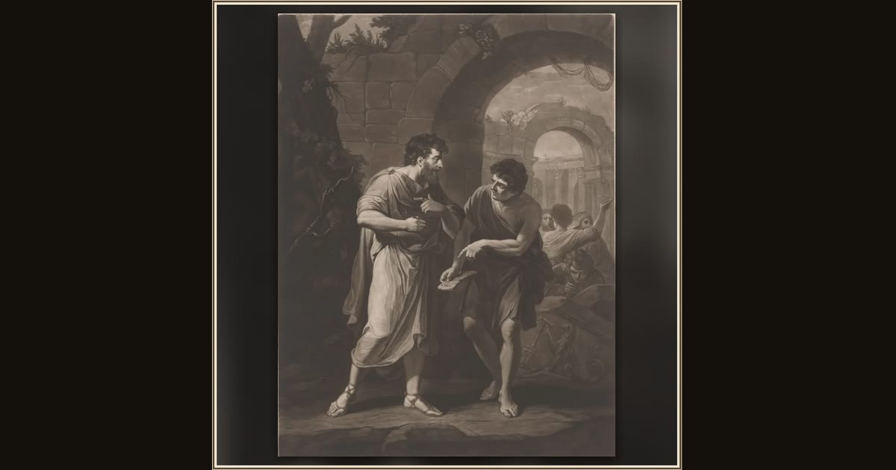

Aristides requested by an illiterate Citizen of Athens to whom het was Unknown, to sign the Ostracism for his own Banishment
William Dickinson, after Angelica Kauffmann · 1786 · rijksmuseum
An Athenian asks Aristides, whom he does not recognize, to sign for Aristides' own banishment; Aristotle describes ostracism as a democratic response to prominent citizens (3.1284a) Explore its place in Aristotle's Politics, Book III, section 20.